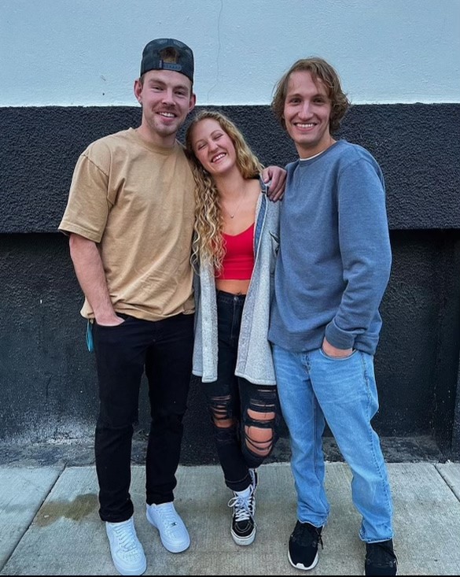

About Me
I have been married to a lovely man named Gary for 32 years! Gary and I enjoy riding our bikes together along with skiing in the winter and traveling when possible. We continue to tell people that marriage gets better with time and effort!
My Family
Christian, our oldest son, is a 26-year-old young man who is sensitive, caring, creative and intelligent. A graduate of Whitworth University , he is working at Schweitzer Engineering with 3D printers.
Our twins, Zach and Maddie, are graduates of the University of Idaho. Zach’s degree is in Film and Theater and Maddie’s is in Medical Science. They are both hilarious, fun-loving, hardworking, and creative.
What I do
Having served in Women’s ministry in the past, I am living my best life as the Director of Discipleship Ministries at CrossPoint Alliance Church, where I have attended for the past 22 years! I enjoy painting and having coffee and deep conversations with friends. At the end of the day, my passion is reading, studying and sharing God’s Word while teaching how to apply it to one’s life with inspiring stories, much laughter and occasional tears. I have found pure joy through following God’s call on my life to teach, speak and lead.
Who Has Helped Me
Heather Smith, Director of Communications and Connections, First Alliance Church (Formerly of CrossPoint Alliance Church)
Paul Smith, Lead Pastor at First Alliance Church in Lexington (formerly of CrossPoint Alliance Church)
Andrew Wilson, Lead Pastor, CrossPoint Alliance Church
Kevin Beehner, Executive Pastor, CrossPoint Alliance Church
My godly, loving, supportive husband, Gary Haas
Authors Who Shaped Me
AW Tozer
CS Lewis
Dallas Willard
Richard Foster
And so many more!